On November 1, 1858, Queen Victoria's proclamation was read at the Grand Durbar in Allahabad. The Queen assumed the Government of India with Calcutta as the Royal Capital. The University of Calcutta was established in 1857. The new municipal corporation completed the public sewerage system in 1859 and the filtered water distribution network in 1860.
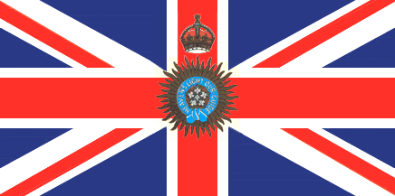
Calcutta's reputation as a trading centre began to wane. The indigo and saltpeter markets collapsed. In 1869, the opening of the Suez Canal made Bombay the closest port to Europe. The business houses on Clive Street, however, were not slow to react. Companies like Martin Burn, Andrew Yule and Williamson Magor moved into tea — found to be superior to Chinese varieties. Calcutta changed from a trading port to a manufacturing base.
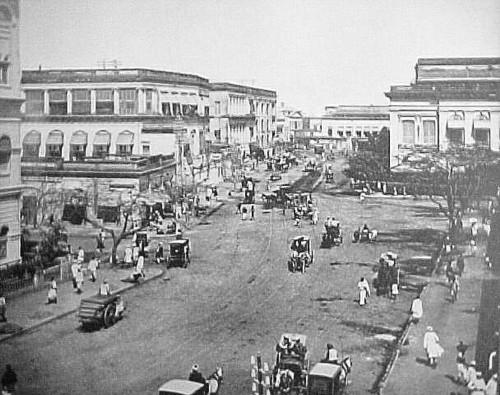
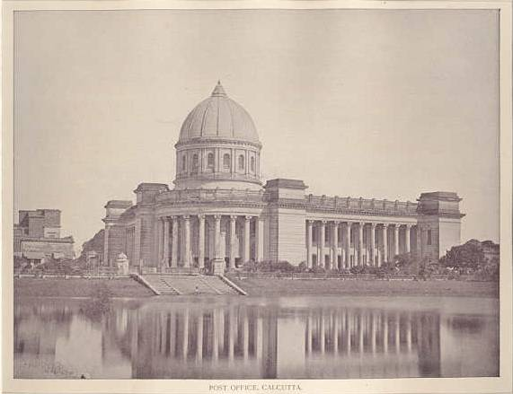
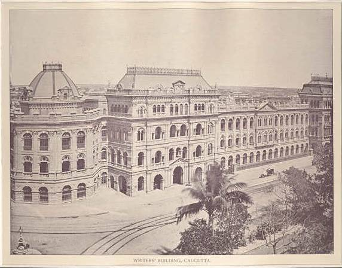
Horse-drawn tramcars arrived in 1873, and the New Market opened in 1874. The Great Eastern Hotel had opened in 1841 and Spence's Hotel in 1830 — the first two hotels in Asia. In 1876, Sir Surendranath Banerjea founded the Indian Association, the first political movement in Asia. In 1877, Queen Victoria assumed the title of Empress of India.
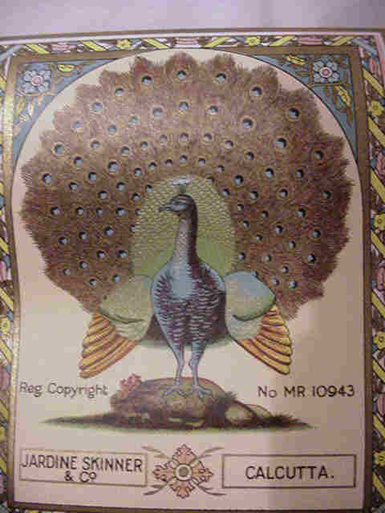
In 1886, a pontoon bridge linked Calcutta and Howrah. Electric lighting arrived in 1899. Siemens laid the first cable between Calcutta and London — Calcutta had arrived as the second city of the British Empire. In 1919, the Victoria Memorial was completed.
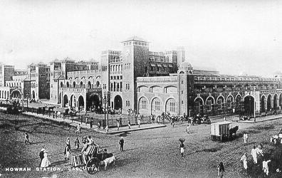
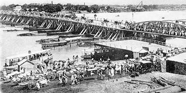
Lord Curzon promoted the partition of Bengal. The partition received Royal Assent on October 16, 1905. Instead of eliminating political dissent, it inflamed nationalist feelings. In 1911, King George V rescinded the partition — but also announced the transfer of the Imperial Capital to Delhi.
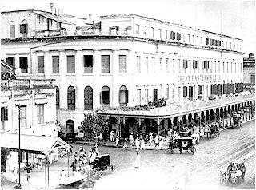
The Golden Thirties was the golden age of Calcutta. Streets glowed with electric lights. Great Eastern, Spence's and the newer Grand and Continental were the finest hotels on the continent. Imperial Airways linked Calcutta to London. Chinese chefs and craftsmen arrived to escape Japanese invasion — Calcutta welcomed everybody.
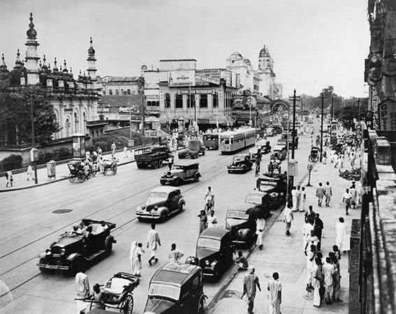
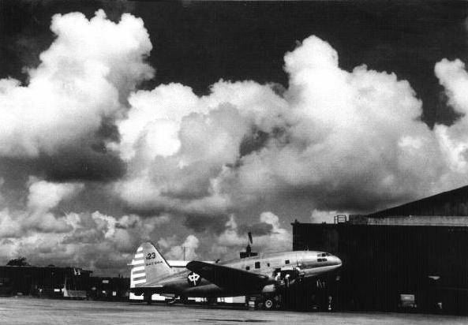
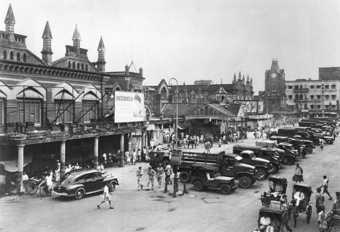
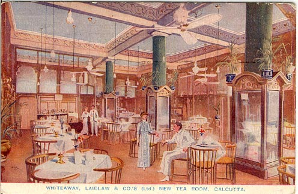
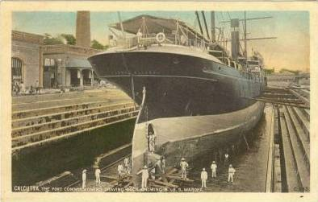
In 1943, Bengal suffered a terrible man-made famine as supplies were flown over the Himalayas to the besieged Allied forces in China, leaving millions dead. The Indian Empire was partitioned on August 14, 1947. Calcutta's glory as the second city of the British Empire ended with the lowering of the Union Jack from Fort William on August 15, 1947.
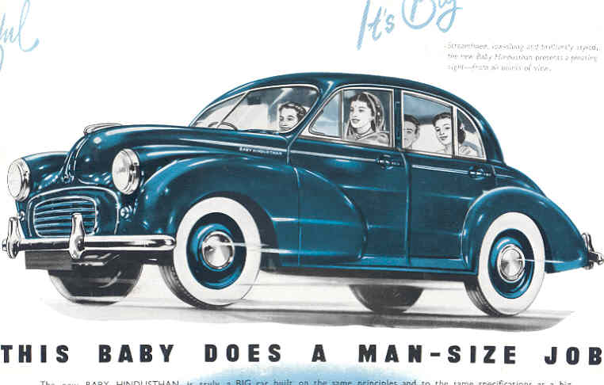